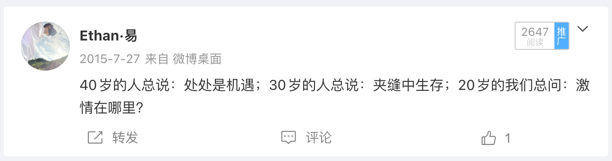

当初敲下这行字时，并不知道它会在十年后正中自己的眉心。
40 岁的人总说：处处是机遇；
30 岁的人总说：夹缝中生存；
20 岁的我们总问：激情在哪里？
偶然翻出十年前写下的这段话，整个人愣在屏幕前。

2015 年夏天的我刚二十出头，随手敲下这几行字的时候，语气里大概满是年轻人的冷眼旁观与躁动。那时总觉得激情比什么都重要，四处张望，急于找到能让自己全情投入的出口。
十年呼啸而过。环境在变，工具在变，身边的浪潮一茬换了一茬。不知不觉间，自己走到了三十岁的关口，竟丝毫不差地落入了当年自己写下的第二句里——夹缝中生存。不再天天把「激情」挂在嘴边，而是开始学着在现实的挤压、技术的重塑与日常的琐碎之间，寻找属于自己的微小平衡。
当初敲下这行字时，并不知道它会在十年后正中自己的眉心。
这大概就是文字最残忍又最温柔的地方，在写下它的那一刻，我以为只是随意的记了一笔；而在时间拉长之后，文字却成了一面镜子，静静等着十年后的自己走上前去认领。
—— Ethan